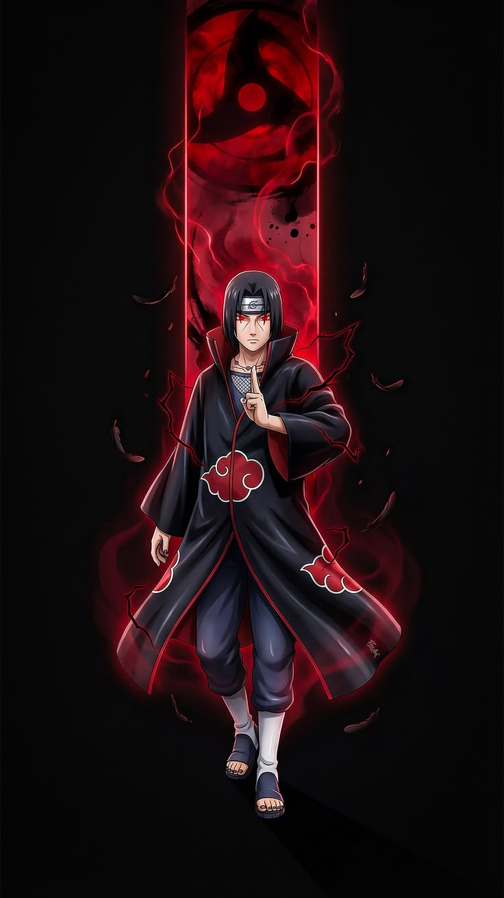
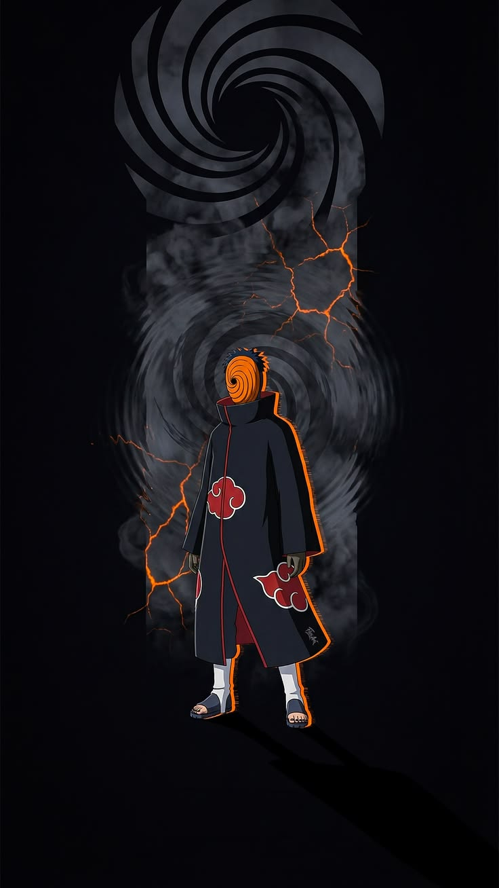
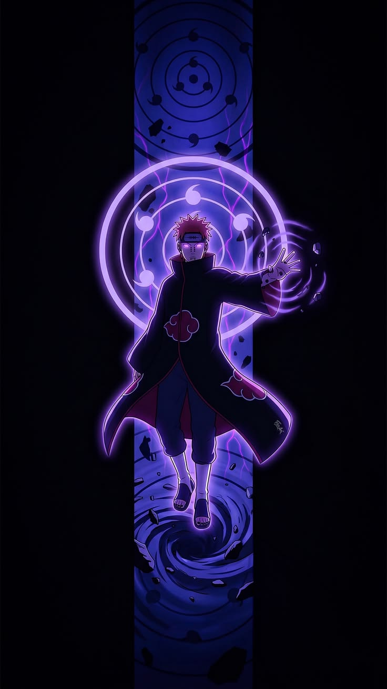
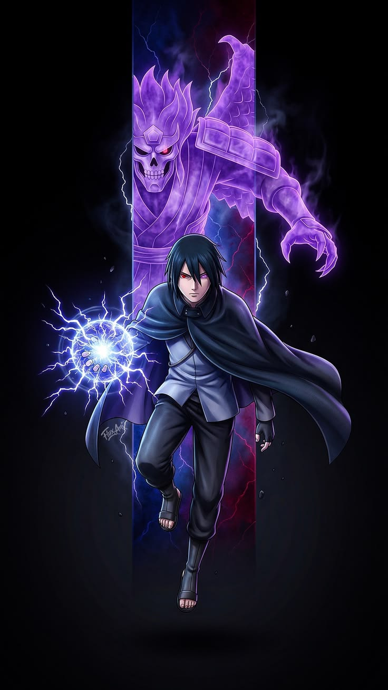
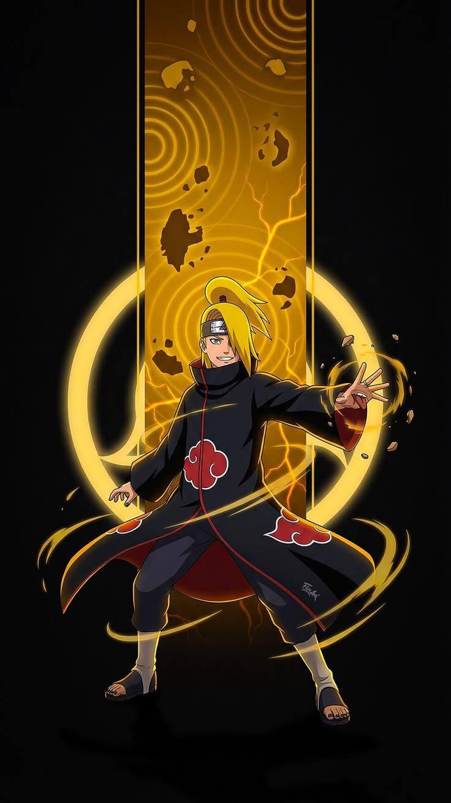
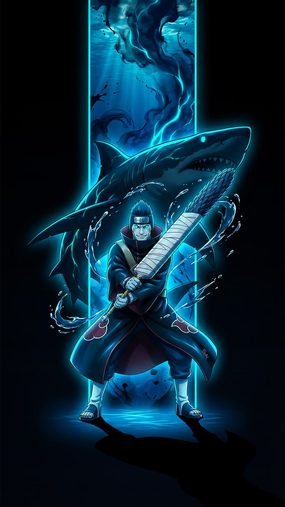
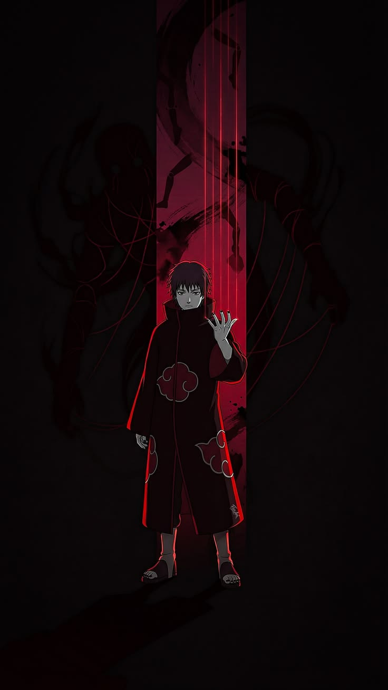
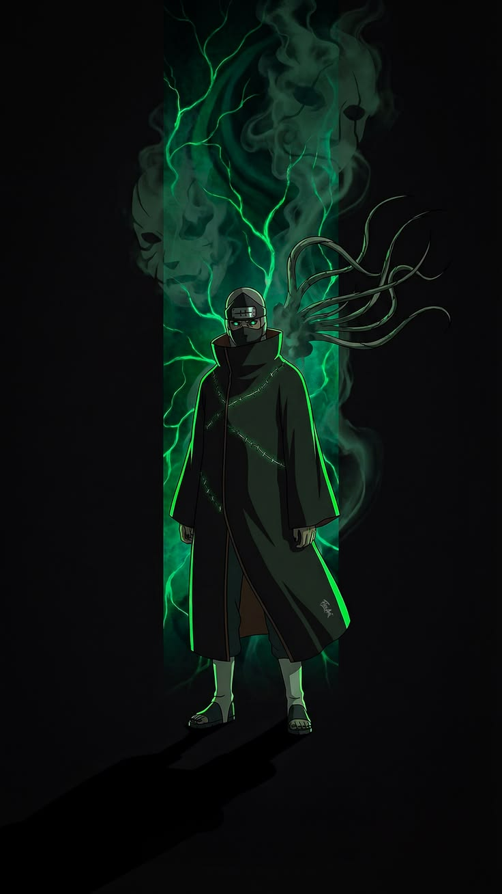

Akatsuke Members

Itachi Uchiha
"People live bound by what they accept as truth alone."


Obito Uchiha
"The longer you live, the more you realize reality hurts."

Pain
"Feel pain, think pain, accept pain, that is true understanding."

Sasuke Uchiha
"I will destroy everything to rebuild a world without pain."

Deidara
"Art is explosion; beauty exists only within a single moment."


Kisame
"Trust is rare; betrayal is the true nature of shinobi."


Sasori
"I turned myself into art, escaping pain and human weakness."


Kakuzu
"In this world, only money decides who lives or dies."